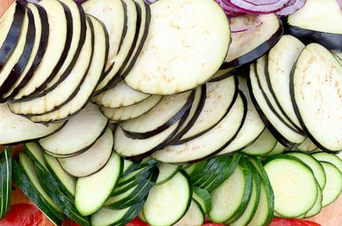
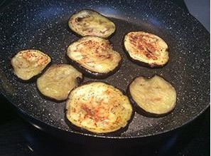
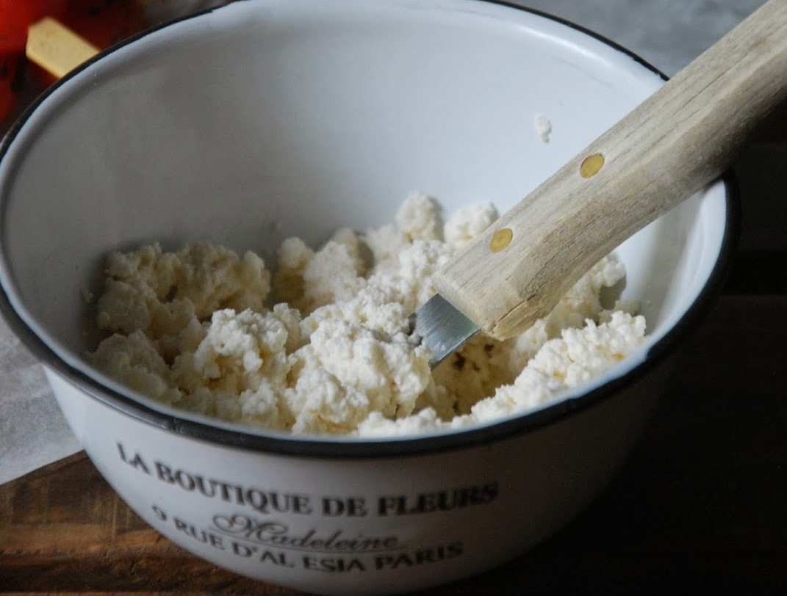
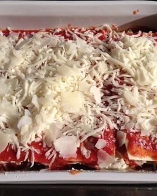
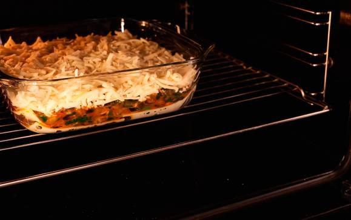

Volver al MENU
LASAÑA DE VERDURAS

Ingredientes
Paso a Paso
Resultado Final
Ingredientes
- 12 laminas de pasta para lasaña
- 2 brenjenas grandes
- 2 calabacines
- 2 tazas de salsa de tomate
- 200g de queso mozzarella
- 200g de ricotta
- 50gde queso parmesano rallado
- Aceite de oliva
- Sal y pimienta
- Oregano, albahaca, etc
Paso a Paso
- Precalentar el horno a 180°. Lavar las berenjenas y los calabazines y cortarlos en rodajas finas.

- En una sartén grande, calentar una cucharada de aceite de oliva y saltear las rodajas de berenjena y calabazines hasta que estén tiernas. Retirar del fuego y reservar

- En un recipiente aparte, mezclar la ricotta con sal y pimienta a tu gusto.

- En una fuente para horno, colocar un poco de salsa de tomate, luego una capa de láminas de pasta para lasaña, una capa de rodajas de berenjena y zucchini, seguida de otra capa de salsa de tomate, luego otra capa de pasta y por encima una capa de ricotta. Repetir el proceso hasta terminar los ingredientes, terminando con una capa de salsa de tomate.
- Espolvorear con queso mozzarella y queso parmesano rallado sobre la última capa de salsa de tomate.

- Hornear durante 25/30 minutos o hasta que se dore la parte superior. Dejar reposar la lasaña durante unos minutos antes de servir. Decorar con hojas de albahaca u orégano por encima.

Resultado Final
Volver al indice